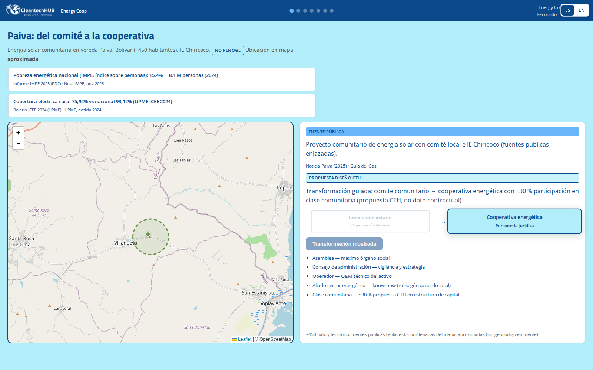
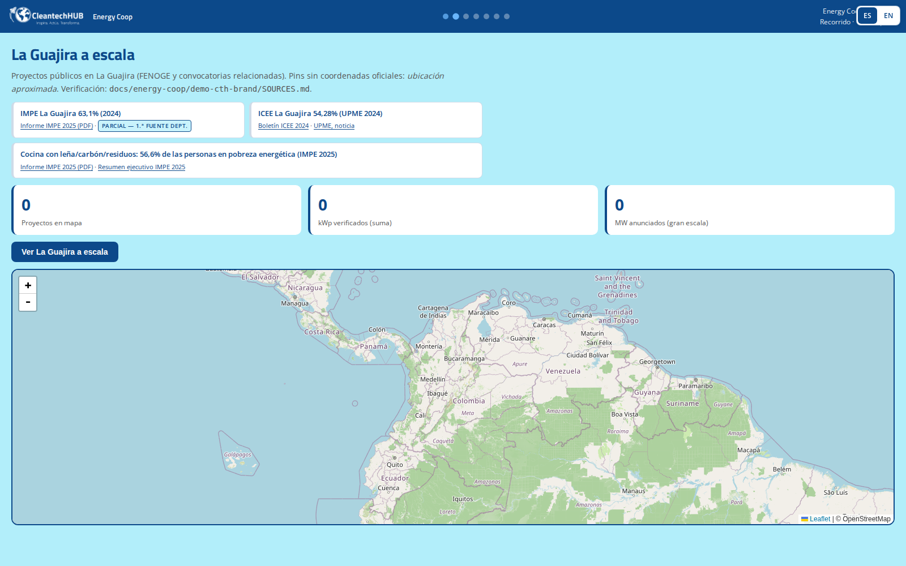
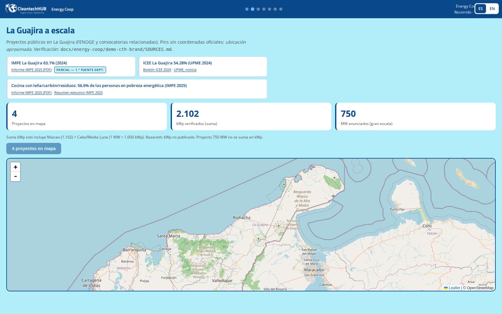
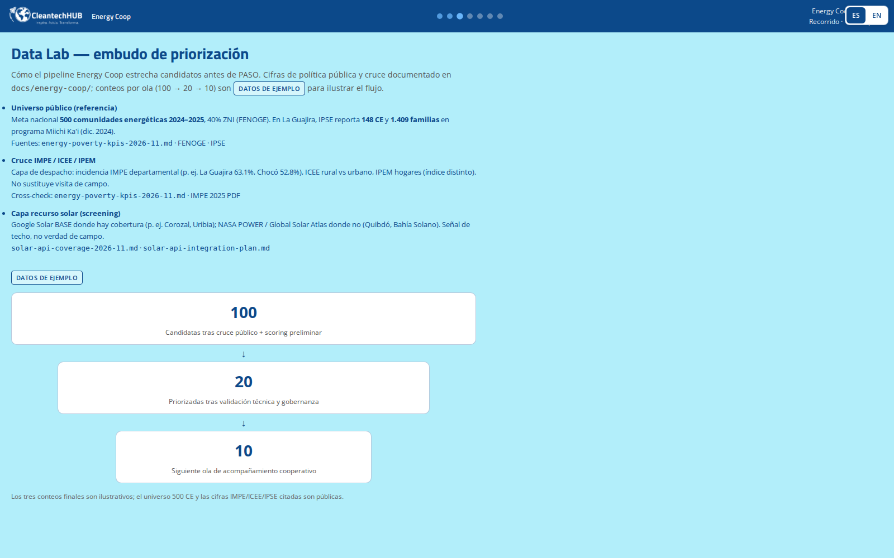
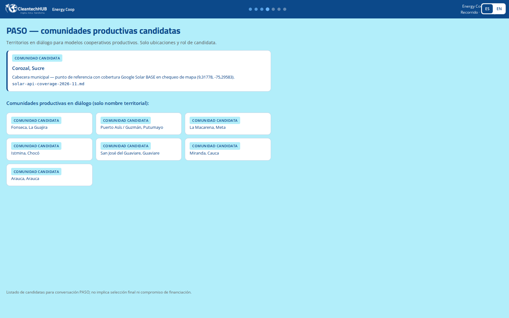
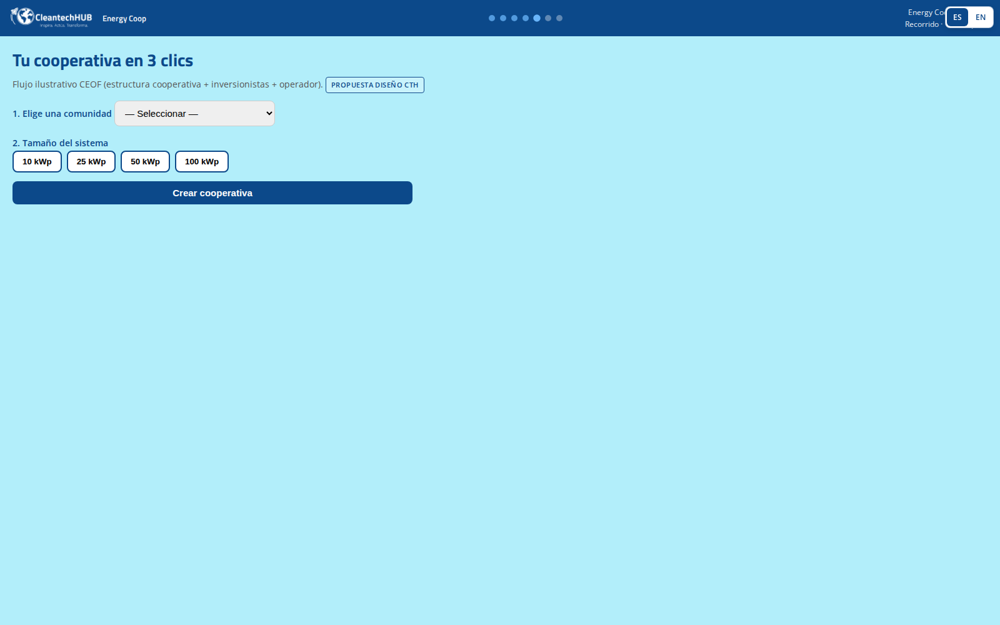

Comunidades energéticas
CleantechHUB como socio contra la pobreza energética: datos públicos, cooperativas de O&M y ecosistema cleantech en Colombia.
Foto: Tierra Grata · comunidades rurales, Colombia
CleantechHUB como socio contra la pobreza energética: datos públicos, cooperativas de O&M y ecosistema cleantech en Colombia.
Foto: Tierra Grata · comunidades rurales, Colombia


Hub de innovación climática en LATAM: startups cleantech, corporativos, inversores y gobierno.
Fuente: cleantechhub.net JSON-LD Organization, oct 2026.


Organizador nacional de la mayor competencia global de ideas verdes — escalera al portafolio Nexus.
Fuente: skills/clp26-brand/SKILL.md · CLAUDE.md.


Portafolio bilingüe de startups cleantech — perfiles publicados en nexus.cleantechhub.net.
Fuente: skills/nexus-onepager · brochure-v2.

Cooperativas energéticas: capa social y O&M donde hay CAPEX y ejecutor — sin fondos MW.
Fuente: brochure-v2 · IMPE 2025 · energiacoop.cleantechhub.net/casos/


Red de hubs físicos LATAM — activación, incubación y aceleración cleantech con PVBLIC Foundation.
Fuente: decks/rein-academic-city-ghana — AGENTS.md (no montos REIN).

Propuestas competitivas y packs P4G en archivo CTH — co-financiamiento estricto, sin cifras inventadas.
Fuente: skills/cth-grant/SKILL.md · docs/grant-graph/spec.md.
CTH: capa social y OPEX bankable con ejecutor y CAPEX comprometido.
O&M comunitario · gobernanza cooperativa · KPIs dimensiones IMPE (no sustituye ICEE).
Candidata: Corozal, Sucre (IMPE 43,1%) — no proyecto PASO de energía.






https://energiacoop.cleantechhub.net/demo/
← → · Espacio · marca CleantechHUB